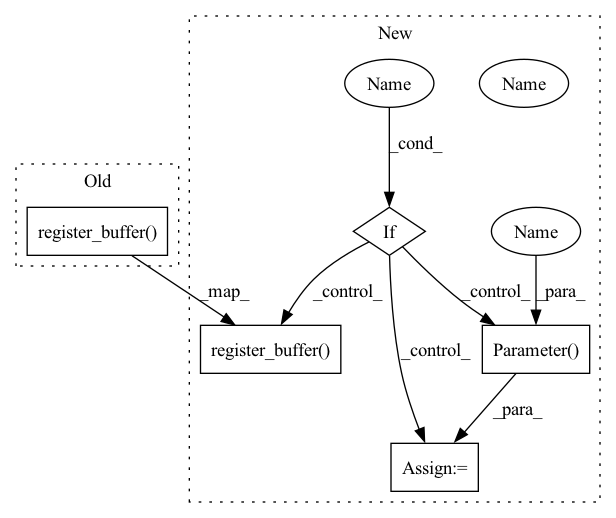

Pattern ID :836
Before Change
raise ValueError(f"unknown modality {freqs_for}")
self.cache = dict()
self.register_buffer( "freqs", freqs)
def forward(self, t, cache_key = None):
if exists(cache_key) and cache_key in self.cache:
return self.cache[cache_key]After Change
self.cache = dict()
if learned_freq :
self.freqs = nn.Parameter(freqs )
else:
self.register_buffer( "freqs", freqs)
def forward(self, t, cache_key = None):
if exists(cache_key) and cache_key in self.cache:
return self.cache[cache_key]In pattern: SUPERPATTERN
Frequency: 4
Non-data size: 5
Instances Fragment ID: 2699819
Project Name: lucidrains/rotary-embedding-torch
Commit Name: 5f4689f39bfb0e26cb53729b01b5af1986a7b3b6
Time: 2021-07-08
Author: lucidrains@gmail.com
File Name: rotary_embedding_torch/rotary_embedding_torch.py
M Class Name: RotaryEmbedding
N Class Name: RotaryEmbedding
M Method Name: __init__(7)
N Method Name: __init__(6)
M Parent Class: nn.Module
N Parent Class: nn.Module
M File Name: rotary_embedding_torch/rotary_embedding_torch.py
N File Name: rotary_embedding_torch/rotary_embedding_torch.py
M Start Line: 42
M End Line: 42
N Start Line: 30
N End Line: 49
Before Change
self.all_reduce_fn = distributed.all_reduce if use_ddp else noop
self.register_buffer("initted", torch.Tensor([not kmeans_init]))
self.register_buffer("cluster_size", torch.zeros(codebook_size))
self.register_buffer( "embed", embed)
self.register_buffer("embed_avg", embed.clone())
@torch.jit.ignore
def init_embed_(self, data):After Change
super().__init__()
self.decay = decay
init_fn = torch.randn if not kmeans_init else torch.zeros
embed = init_fn(codebook_size, dim)
self.codebook_size = codebook_size
self.kmeans_iters = kmeans_iters
self.eps = eps
self.threshold_ema_dead_code = threshold_ema_dead_code
self.all_reduce_fn = distributed.all_reduce if use_ddp else noop
self.register_buffer("initted", torch.Tensor([not kmeans_init]))
self.register_buffer("cluster_size", torch.zeros(codebook_size))
self.register_buffer("embed_avg", embed.clone())
self.learnable_codebook = learnable_codebook
if learnable_codebook :
self.embed = nn.Parameter( embed)
else:
self.register_buffer( "embed", embed)
@torch.jit.ignore
def init_embed_(self, data):
if self.initted: Fragment ID: 2699821
Project Name: lucidrains/vector-quantize-pytorch
Commit Name: ebce893fff695845f7fe0f04d1400d2c29b94f98
Time: 2021-12-17
Author: lucidrains@gmail.com
File Name: vector_quantize_pytorch/vector_quantize_pytorch.py
M Class Name: EuclideanCodebook
N Class Name: EuclideanCodebook
M Method Name: __init__(10)
N Method Name: __init__(9)
M Parent Class: nn.Module
N Parent Class: nn.Module
M File Name: vector_quantize_pytorch/vector_quantize_pytorch.py
N File Name: vector_quantize_pytorch/vector_quantize_pytorch.py
M Start Line: 104
M End Line: 104
N Start Line: 90
N End Line: 114
Before Change
self.all_reduce_fn = distributed.all_reduce if use_ddp else noop
self.register_buffer("initted", torch.Tensor([not kmeans_init]))
self.register_buffer("cluster_size", torch.zeros(codebook_size))
self.register_buffer( "embed", embed)
@torch.jit.ignore
def init_embed_(self, data):
if self.initted:After Change
self.register_buffer("cluster_size", torch.zeros(codebook_size))
self.learnable_codebook = learnable_codebook
if learnable_codebook :
self.embed = nn.Parameter( embed)
else:
self.register_buffer( "embed", embed)
@torch.jit.ignore
def init_embed_(self, data):
if self.initted: Fragment ID: 2699823
Project Name: lucidrains/vector-quantize-pytorch
Commit Name: ebce893fff695845f7fe0f04d1400d2c29b94f98
Time: 2021-12-17
Author: lucidrains@gmail.com
File Name: vector_quantize_pytorch/vector_quantize_pytorch.py
M Class Name: CosineSimCodebook
N Class Name: CosineSimCodebook
M Method Name: __init__(10)
N Method Name: __init__(9)
M Parent Class: nn.Module
N Parent Class: nn.Module
M File Name: vector_quantize_pytorch/vector_quantize_pytorch.py
N File Name: vector_quantize_pytorch/vector_quantize_pytorch.py
M Start Line: 200
M End Line: 200
N Start Line: 192
N End Line: 217
Before Change
if not isinstance(threshold, torch.Tensor):
threshold = torch.as_tensor(threshold) // TODO: or .tensor() if no copy
self.register_buffer( "threshold", threshold)
if spike_grad is None:
self.spike_grad = self.Heaviside.apply
else:After Change
self.register_buffer("beta", beta)
if not isinstance(threshold, torch.Tensor):
threshold = torch.as_tensor(threshold)
if learn_threshold :
self.threshold = nn.Parameter( threshold)
else:
self.register_buffer( "threshold", threshold)
if spike_grad is None:
self.spike_grad = self.Heaviside.apply
else: Fragment ID: 2699825
Project Name: jeshraghian/snntorch
Commit Name: dff762709aab76e784ee5060b1e5c11422a90824
Time: 2021-12-20
Author: jeshraghian@gmail.com
File Name: snntorch/_neurons/lif.py
M Class Name: LIF
N Class Name: LIF
M Method Name: __init__(10)
N Method Name: __init__(9)
M Parent Class: nn.Module
N Parent Class: nn.Module
M File Name: snntorch/_neurons/lif.py
N File Name: snntorch/_neurons/lif.py
M Start Line: 57
M End Line: 57
N Start Line: 29
N End Line: 59